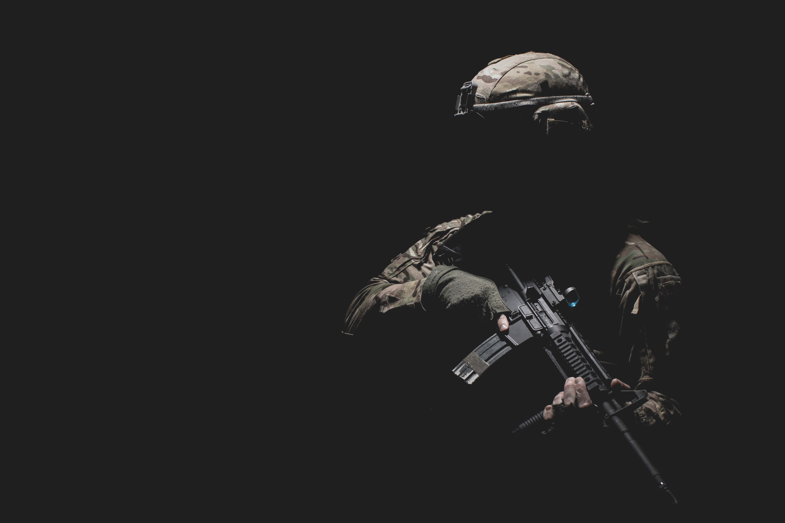
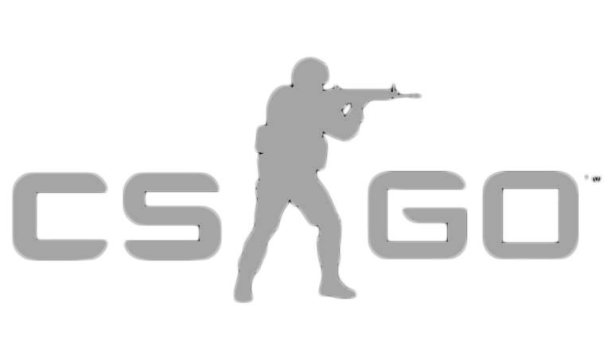

Our pseudo-company has specialized in peddling CS:GO skins to clueless gamers since the advent of this goldmine of a market in 2013, and we are experts at it by now. If you feel an overwhelming need to impress your peers with vain accessories, we have you covered from top to toe. While we couldn’t care less what kind of graffiti is all the rage on your guns, we sure do like to make money – and so, enter our Flay Market. Here you will find the very same overpriced skins you can easily get from almost literally anywhere else on the Web. Oh, and pray we never forget: they don’t actually do anything. They’re just cosmetics.
Basically all you need to know about skins is that you need them to be good at the game, even though they add zero advantage to your gameplay. Your enemies, your team members, and probably even your parents will laugh until they can laugh no more if they ever see you one-deag someone without the Kumicho Dragon finish showcased on the handle.
Follow your heart, and follow this link to our Market Area – join the rest of the herd in style, mack out with the latest skin fashion and never look back. You’ll feel like a million dollars rocking the Dragon Lore AWP, and no one can ever tell you otherwise, least of all your common sense.
 